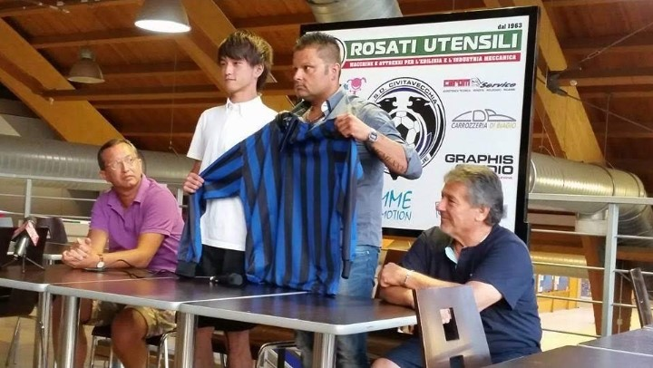
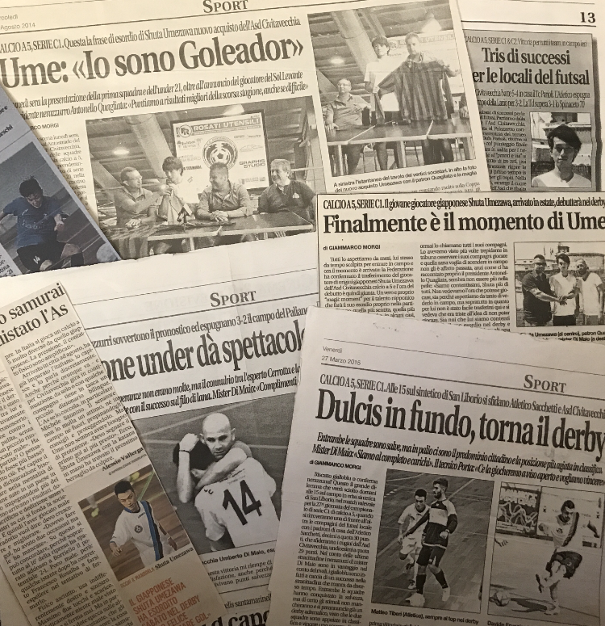
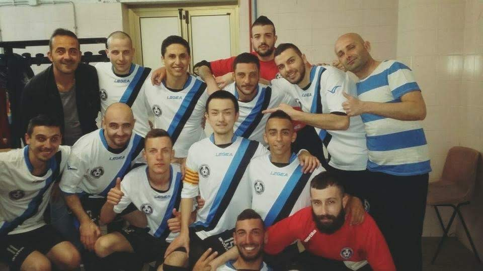

PROFILE
NAME：ウメザワ シュウタ
BIRTH：1994
略歴：
フットサルプレーヤーとして活動するため、20歳時にイタリアへと渡り1年間活動。
帰国後、大阪、仙台で活動し、23歳時に引退。
パソコン教室の教室責任者からキャリアをスタートさせ、コンビニ専門の経営コンサルタントを経て、
社内SEとしての現在にいたる。



WORK EXPERIENCE
2022-現在
株式会社NGK
社内SE
●kintone構築・運用
・要求整理
・要件定義
・要件定義書など各種ドキュメント作成
・カスタマイズファイル作成（javascript）
・マニュアル作成
●MA（マーケティングオートメーション）ツール活用
●人事情報システム開発PjM
・市場調査
・ベンダーとのコミュニケーション
・要求整理
・要件定義
・要件定義書など各種ドキュメント作成
・マニュアル作成
・ユーザー説明会の実施
・ヘルプサイト制作→改善点分析
・ヘルプデスク
・ユーザインタビュー
・インシデント管理 体制構築・運用
・SLO/利用規約の作成
・サポートツールの作成(Excel VBA)
●業務効率化プログラムファイルの作成（Excel）